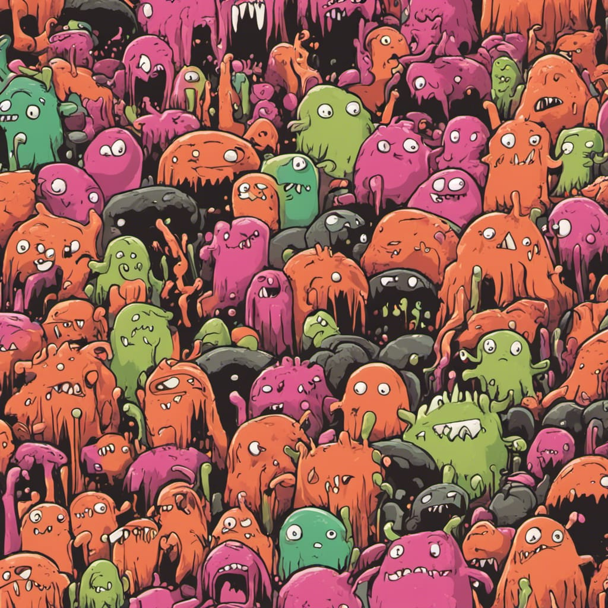
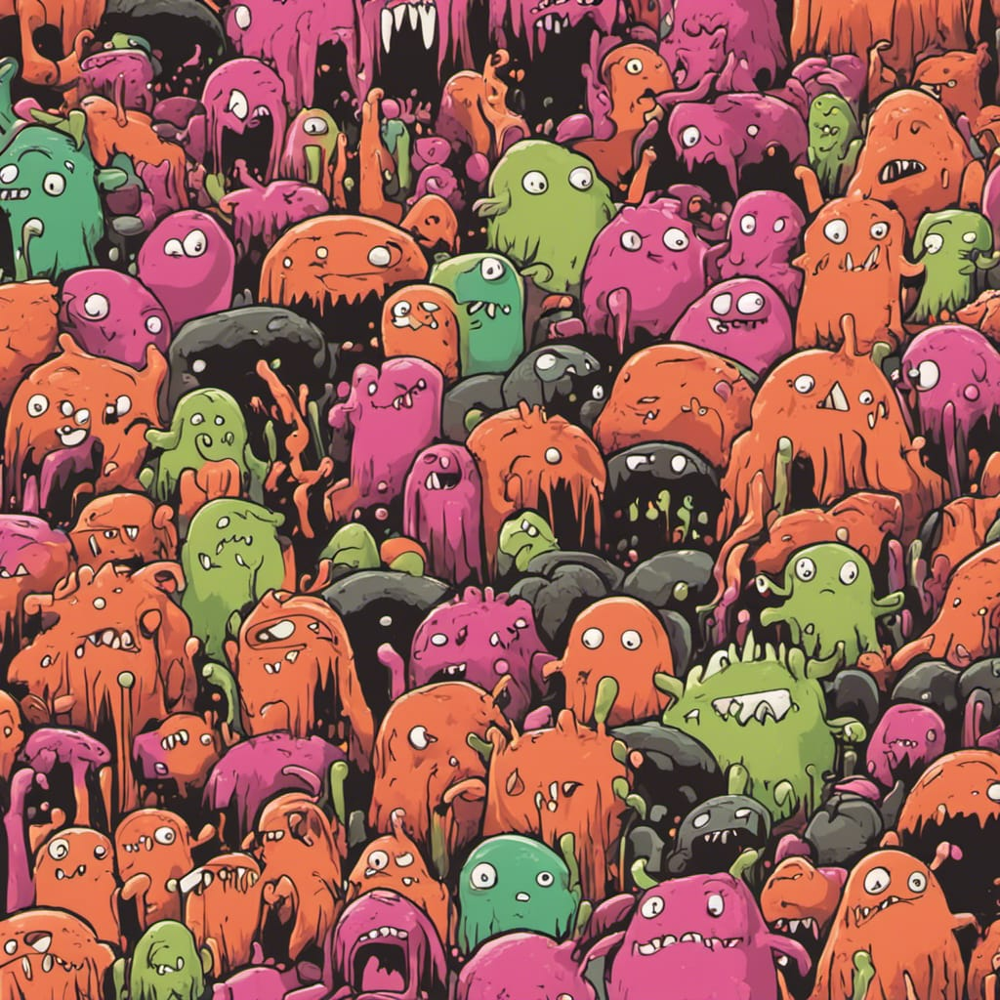
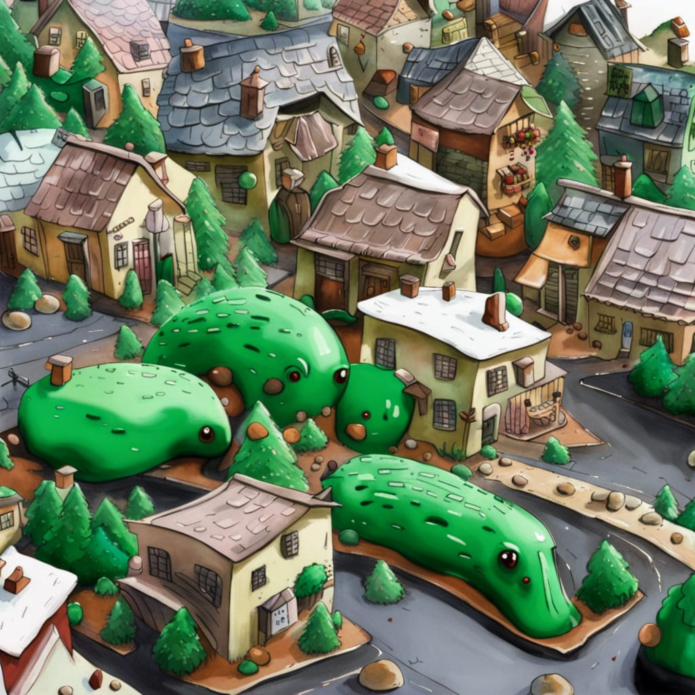
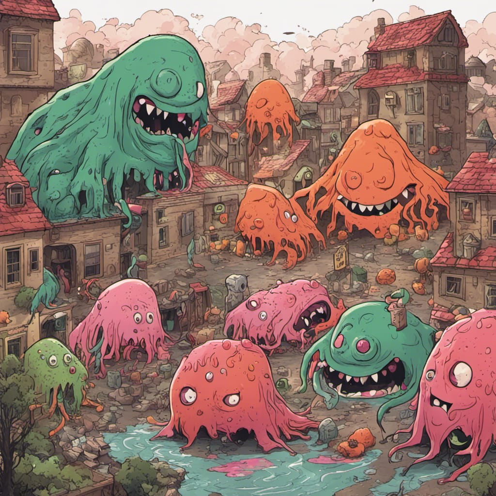

Meet the Boogers
Step into the whimsical and occasionally slimy world of "The Boogers of Nostrilla"! These aren't your typical runny-nose companions – these boogers are the lovable, mischievous, and sometimes heroic characters that reside within the hidden realm of your nostrils.
 

In the bustling city of Nostrilla, boogers aren't just ordinary mucus; they have personalities as colorful as their slimy exteriors. Join Drippy the Adventurer as he seeks out the next wet and wild escapade, or witness the unexpected sneezes caused by Sneezy Steve, the booger with a penchant for perfect timing.
 
But it's not all snotty antics and nasal hijinks! Meet Grumpy Gus, the booger on a mission to eradicate allergies, and Fluffy Flo, the pocket-fuzz-loving fashionista with a unique sense of style. From epic showdowns with the dreaded tissue monster to forming an opera-worthy booger choir, these characters bring laughter, adventure, and a whole lot of gooey fun.
Step into Nostrilla, where a world of sneezes and sniffles becomes a stage for the delightfully absurd and adorably slimy escapades of "The Boogers of Nostrilla"!